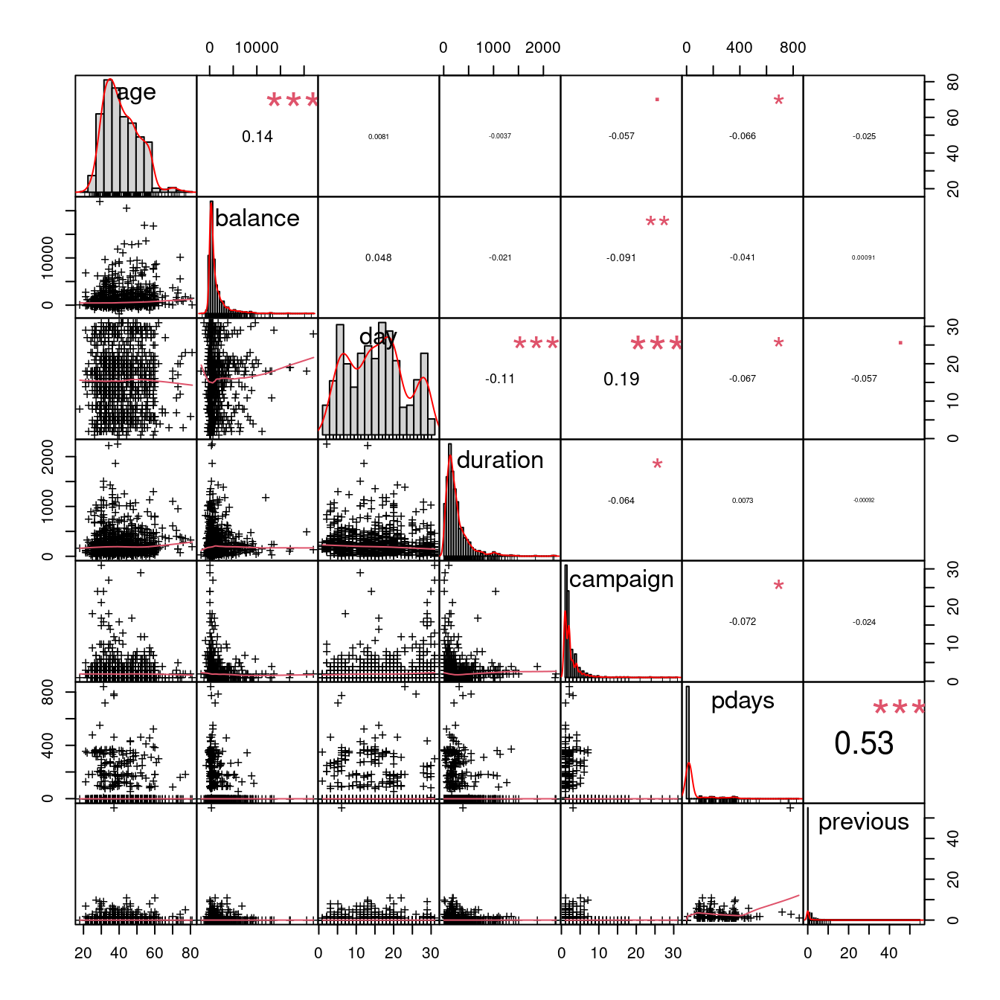
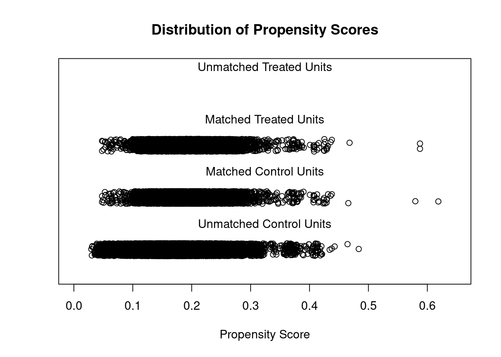
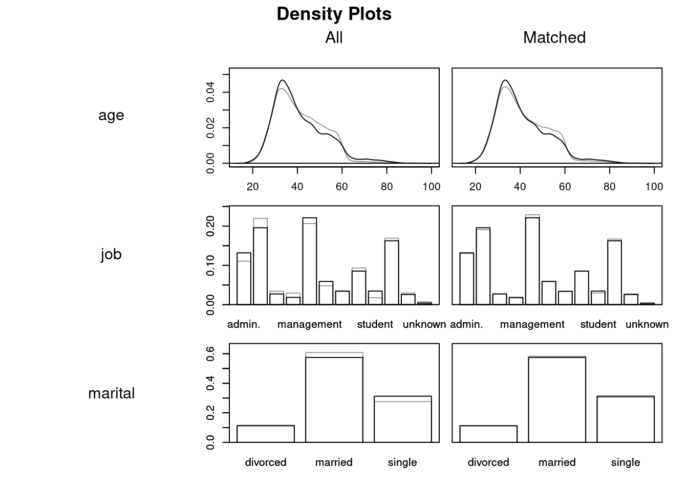
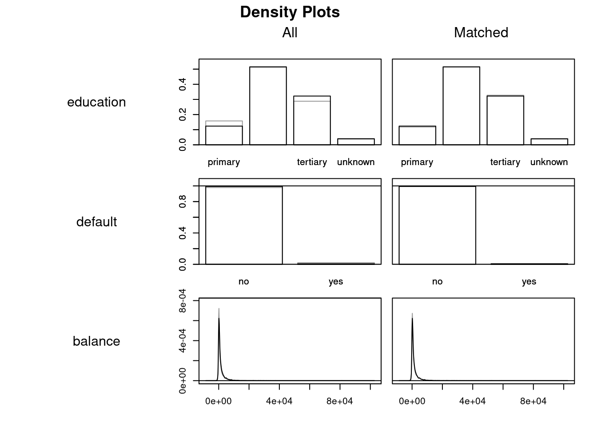
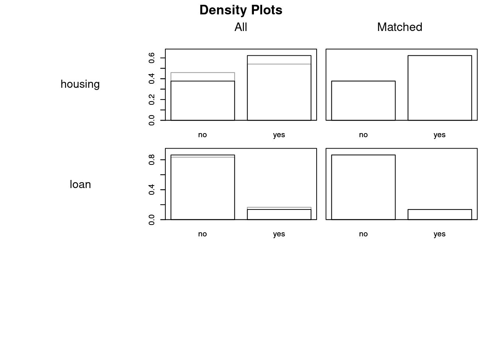
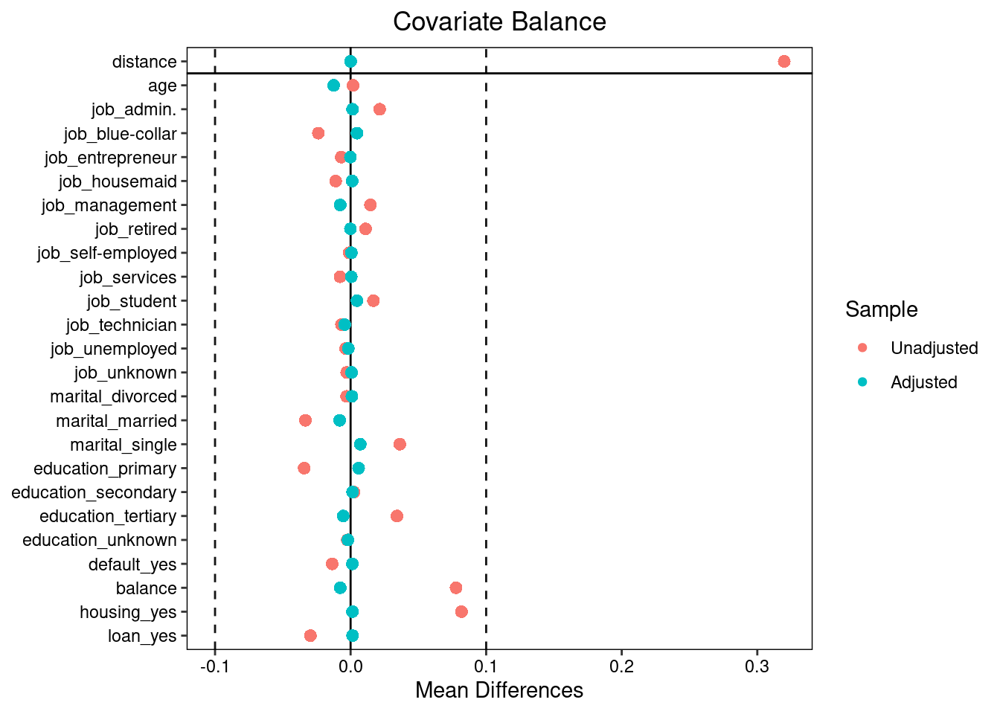
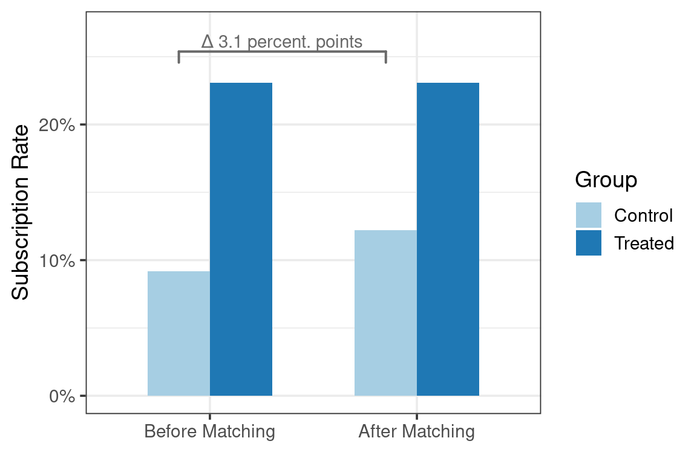

library(MatchIt)
library(tidyverse)
library(lubridate)
library(ggplot2)
library(readr)
library(skimr)
library(here)In marketing analytics, one of the most common questions is:
Did our campaign actually cause people to subscribe, or the subscribers were already more likely to do so?
When we only have observational data — not a randomized experiment — it’s tricky to separate correlation from causation. This is where Propensity Score Matching (PSM) comes in.
In this tutorial, we’ll use the Bank Marketing dataset from the UCI Machine Learning Repository to estimate the causal effect of being previously contacted on the probability of subscribing to a term deposit.
We’ll use the R package MatchIt to perform matching and evaluate balance.
Data Overview
First, let’s load the necessary libraries and the dataset.
Load Packages
Load Data
Here we download the UCI Bank Marketing dataset if it’s not already present in the working directory.
if (file.exists(here("bank-full.csv"))) {
dataset <- read.csv(file.path(here(), "bank-full.csv"), sep = ";")
} else {
url <- "https://archive.ics.uci.edu/static/public/222/bank+marketing.zip"
temp <- tempfile()
download.file(url, temp)
unzip(temp, "bank.zip", exdir = here())
unzip(here("bank.zip"), "bank-full.csv", exdir = here())
dataset <- read.csv(file.path(here(), "bank-full.csv"), sep = ";")
unlink(temp)
}
dataset |> glimpse()Rows: 45,211
Columns: 17
$ age <int> 58, 44, 33, 47, 33, 35, 28, 42, 58, 43, 41, 29, 53, 58, 57, …
$ job <chr> "management", "technician", "entrepreneur", "blue-collar", "…
$ marital <chr> "married", "single", "married", "married", "single", "marrie…
$ education <chr> "tertiary", "secondary", "secondary", "unknown", "unknown", …
$ default <chr> "no", "no", "no", "no", "no", "no", "no", "yes", "no", "no",…
$ balance <int> 2143, 29, 2, 1506, 1, 231, 447, 2, 121, 593, 270, 390, 6, 71…
$ housing <chr> "yes", "yes", "yes", "yes", "no", "yes", "yes", "yes", "yes"…
$ loan <chr> "no", "no", "yes", "no", "no", "no", "yes", "no", "no", "no"…
$ contact <chr> "unknown", "unknown", "unknown", "unknown", "unknown", "unkn…
$ day <int> 5, 5, 5, 5, 5, 5, 5, 5, 5, 5, 5, 5, 5, 5, 5, 5, 5, 5, 5, 5, …
$ month <chr> "may", "may", "may", "may", "may", "may", "may", "may", "may…
$ duration <int> 261, 151, 76, 92, 198, 139, 217, 380, 50, 55, 222, 137, 517,…
$ campaign <int> 1, 1, 1, 1, 1, 1, 1, 1, 1, 1, 1, 1, 1, 1, 1, 1, 1, 1, 1, 1, …
$ pdays <int> -1, -1, -1, -1, -1, -1, -1, -1, -1, -1, -1, -1, -1, -1, -1, …
$ previous <int> 0, 0, 0, 0, 0, 0, 0, 0, 0, 0, 0, 0, 0, 0, 0, 0, 0, 0, 0, 0, …
$ poutcome <chr> "unknown", "unknown", "unknown", "unknown", "unknown", "unkn…
$ y <chr> "no", "no", "no", "no", "no", "no", "no", "no", "no", "no", …Data Summary
dataset |> skim()| Name | dataset |
| Number of rows | 45211 |
| Number of columns | 17 |
| _______________________ | |
| Column type frequency: | |
| character | 10 |
| numeric | 7 |
| ________________________ | |
| Group variables | None |
Variable type: character
| skim_variable | n_missing | complete_rate | min | max | empty | n_unique | whitespace |
|---|---|---|---|---|---|---|---|
| job | 0 | 1 | 6 | 13 | 0 | 12 | 0 |
| marital | 0 | 1 | 6 | 8 | 0 | 3 | 0 |
| education | 0 | 1 | 7 | 9 | 0 | 4 | 0 |
| default | 0 | 1 | 2 | 3 | 0 | 2 | 0 |
| housing | 0 | 1 | 2 | 3 | 0 | 2 | 0 |
| loan | 0 | 1 | 2 | 3 | 0 | 2 | 0 |
| contact | 0 | 1 | 7 | 9 | 0 | 3 | 0 |
| month | 0 | 1 | 3 | 3 | 0 | 12 | 0 |
| poutcome | 0 | 1 | 5 | 7 | 0 | 4 | 0 |
| y | 0 | 1 | 2 | 3 | 0 | 2 | 0 |
Variable type: numeric
| skim_variable | n_missing | complete_rate | mean | sd | p0 | p25 | p50 | p75 | p100 | hist |
|---|---|---|---|---|---|---|---|---|---|---|
| age | 0 | 1 | 40.94 | 10.62 | 18 | 33 | 39 | 48 | 95 | ▅▇▃▁▁ |
| balance | 0 | 1 | 1362.27 | 3044.77 | -8019 | 72 | 448 | 1428 | 102127 | ▇▁▁▁▁ |
| day | 0 | 1 | 15.81 | 8.32 | 1 | 8 | 16 | 21 | 31 | ▇▆▇▆▆ |
| duration | 0 | 1 | 258.16 | 257.53 | 0 | 103 | 180 | 319 | 4918 | ▇▁▁▁▁ |
| campaign | 0 | 1 | 2.76 | 3.10 | 1 | 1 | 2 | 3 | 63 | ▇▁▁▁▁ |
| pdays | 0 | 1 | 40.20 | 100.13 | -1 | -1 | -1 | -1 | 871 | ▇▁▁▁▁ |
| previous | 0 | 1 | 0.58 | 2.30 | 0 | 0 | 0 | 0 | 275 | ▇▁▁▁▁ |
Correlation Matrix
library(PerformanceAnalytics)
set.seed(123)
dataset |>
sample_n(1000) |>
select_if(is.numeric) |>
chart.Correlation(histogram = TRUE, pch = "+")

Defining Treatment and Outcome
Our treatment variable will be whether the client was previously contacted (pdays != -1), and the outcome variable will be whether the client subscribed to a term deposit (y == "yes").
dataset <- dataset |>
mutate(
treat = ifelse(pdays != -1, 1, 0), # previously contacted
outcome = ifelse(y == "yes", 1, 0)
)treat = 1: client was previously contacted (pdays != -1);treat = 0: new client, not contacted before;outcome = 1: client subscribed to term deposit;outcome = 0: client did not subscribe.
Let’s check the basic rates:
dataset |>
group_by(treat) |>
summarise(
n = n(),
subscription_rate = mean(outcome)
)# A tibble: 2 × 3
treat n subscription_rate
<dbl> <int> <dbl>
1 0 36954 0.0916
2 1 8257 0.231 We can clearly see that previously contacted clients (treat = 1) have a higher subscription rate — but this might be due to other factors like income or engagement.
t_test_all <- t.test(outcome ~ treat, data = dataset)
t_test_all
Welch Two Sample t-test
data: outcome by treat
t = -28.552, df = 10051, p-value < 2.2e-16
alternative hypothesis: true difference in means between group 0 and group 1 is not equal to 0
95 percent confidence interval:
-0.1486926 -0.1295874
sample estimates:
mean in group 0 mean in group 1
0.09157331 0.23071333 Covariates and Model Formula
We include demographic and financial variables that can influence both being re-contacted and subscribing. We need to exclude campaign (number of contacts performed during this campaign and for this client), contact (contact communication type), previous (number of contacts performed before this campaign), and poutcome (outcome of the previous marketing campaign) to avoid leaking information about treatment assignment.
formula <- treat ~ age + job + marital + education + default +
balance + housing + loan Estimating Propensity Scores and Matching
We now fit the PSM model using nearest-neighbor matching:
psm <- matchit(
formula,
data = dataset,
method = "nearest",
ratio = 1
)Let’s inspect the summary. We won’t include the whole output of the summary function, just the number of matched pairs:
summary(psm)$nn Control Treated
All (ESS) 36954 8257
All 36954 8257
Matched (ESS) 8257 8257
Matched 8257 8257
Unmatched 28697 0
Discarded 0 0Visualizing Balance
plot(psm, type = "jitter", interactive = FALSE)

plot(psm, type = "density", interactive = FALSE,
which.xs = ~ age + job + marital + education + default + balance +
housing + loan)



library(cobalt)
love.plot(psm, threshold = 0.1)

Estimating the Treatment Effect
Extract the matched data and estimate the effect on subscription:
matched_data <- match.data(psm)
t_test <- t.test(outcome ~ treat, data = matched_data)
t_test
Welch Two Sample t-test
data: outcome by treat
t = -18.501, df = 15563, p-value < 2.2e-16
alternative hypothesis: true difference in means between group 0 and group 1 is not equal to 0
95 percent confidence interval:
-0.1201447 -0.0971255
sample estimates:
mean in group 0 mean in group 1
0.1220782 0.2307133 The difference in means represents the Average Treatment Effect on the Treated (ATT) — how much more likely previously contacted customers are to subscribe, compared to similar new customers.
diff_means <- unname(t_test$estimate[2] - t_test$estimate[1])
diff_means[1] 0.1086351Results and Interpretation
Before matching, customers who were previously contacted were \(13.91\) percentage points more likely to subscribe to a term deposit. After controlling for demographics and financial variables via propensity score matching, previously contacted customers were \(10.86\) percentage points more likely to subscribe than comparable new customers (\(p = 1.3128662\times 10^{-75}\)), which is \(3.05\) percentage points (\(21.92\%\)) less than the initial estimate.
Before matching: previously contacted customers have a much higher subscription rate.
After matching: the difference decreases, indicating that part of the initial gap was due to selection bias.

Discussion and Limitations
Unobserved confounding: we only matched on observed variables; factors like personality or spending habits might still bias the result.
Choice of treatment: we assumed “previous contact” is the cause; other definitions (e.g., contact channel, number of calls) could be explored.
Generalization: results apply to customers similar to those treated (ATT), not necessarily to all clients.
Conclusion
In this tutorial, we’ve demonstrated how to estimate a causal effect using Propensity Score Matching with real marketing data.
The key takeaways:
PSM helps approximate experimental conditions in observational settings.
Always check covariate balance before interpreting results.
Proper treatment and covariate definitions are critical.
The full R code can be easily adapted to other business questions, for example, measuring the effect of marketing emails, app notifications, or loyalty programs when randomization is not possible.
References
Ho D, Imai K, King G, Stuart E (2011). “MatchIt: Nonparametric Preprocessing for Parametric Causal Inference.” Journal of Statistical Software, 42(8), 1-28. doi:10.18637/jss.v042.i08 https://doi.org/10.18637/jss.v042.i08.